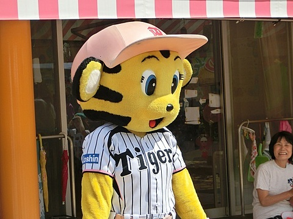
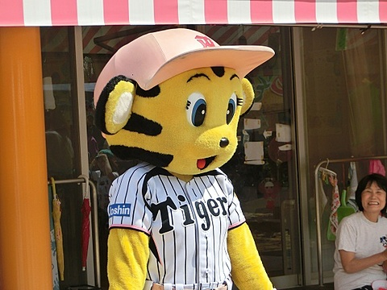

野球とは？
野球は、バットとボールを使って行うチームスポーツで、アメリカや日本で非常に人気があります。 2つのチームが攻撃と守備を交互に行い、得点を競います。

基本ルール
- 1チームは9人で構成される
- 攻撃側は3アウトになるまで打席に立てる
- 守備側はピッチャーがボールを投げてアウトを取る
- 試合は9回まで行われる（延長戦あり）
野球の難しいルール
インフィールドフライ
インフィールドフライとは、ノーアウトまたはワンアウトで、 ランナーが1塁と2塁（または満塁）のときに内野にフライが上がると適用されるルールです。
守備側がわざとボールを落としてダブルプレーを狙うのを防ぐため、 審判が「インフィールドフライ」と宣言した時点で打者は自動的にアウトになります。
ボーク（Balk）
ボークとは、ピッチャーが投球動作中に不正な動きをしたときに適用される反則です。 例えば、投球フォームに入って急に投げるのをやめたり、明らかに牽制するふりをして投げなかったりすると、 ボークが宣告され、ランナーは自動的に1つ進塁できます。
振り逃げ（Dropped Third Strike）
三振しても、キャッチャーが3ストライク目のボールを捕球できなかった場合、 打者は1塁へ走ることができます（1塁が空いている場合、または2アウト時のみ）。
このとき守備側は、打者をアウトにするには1塁へ送球するか、直接タッチしなければなりません。
タッチアップ（Tag Up）
外野へのフライが捕球されたとき、ランナーはベースに戻ってから進塁する必要があります。 これを「タッチアップ」と呼びます。
捕球後に素早くスタートすることで、犠牲フライとして得点や進塁が可能です。 ただし、早くスタートしすぎるとアウトになる可能性があるため、タイミングが重要です。
有名な選手
- 大谷翔平（日本）
- イチロー（日本）
- ベーブ・ルース（アメリカ）
各野球チームのマスコット
野球チームにはそれぞれユニークなマスコットがいて、試合を盛り上げたり、ファンと交流したりします。
ドアラ（中日ドラゴンズ）
かわいいドラゴンのキャラクターで、ユーモアあふれるパフォーマンスが人気です。
 

トラッキーとラッキー（阪神タイガース）
トラッキーは虎のキャラクターで、ラッキーはその弟分。元気で親しみやすい存在です。
ハリー（福岡ソフトバンクホークス）
ホークスの公式マスコットで、鷹のキャラクター。元気で子供たちに人気があります。
バファローブル（オリックス・バファローズ）
水牛をモチーフにしたマスコットで、力強くて愛らしいキャラクターとしてファンに愛されています。
野球の楽しいところ
- 勝ったときの喜び： 苦しい試合を乗り越えて勝利した瞬間の喜びは格別です。 サヨナラ勝ちや逆転ホームランなど、ドラマのような展開がよくあります。
- 打ったときの爽快感： バットにボールがクリーンヒットしたときの「カキーン！」という音と感触は、とても気持ちいいです。 打てたときの達成感がクセになります。
- 守備の緊張感と達成感： フライをキャッチしたり、ゴロをうまくさばいてアウトを取ったときは、 自分がチームに貢献できたという嬉しさがあります。